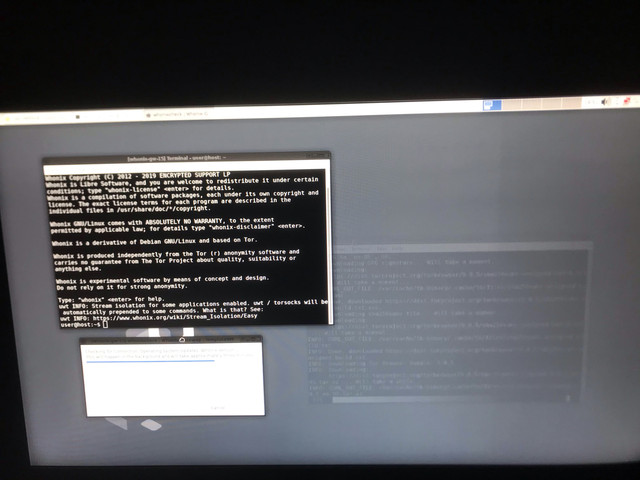
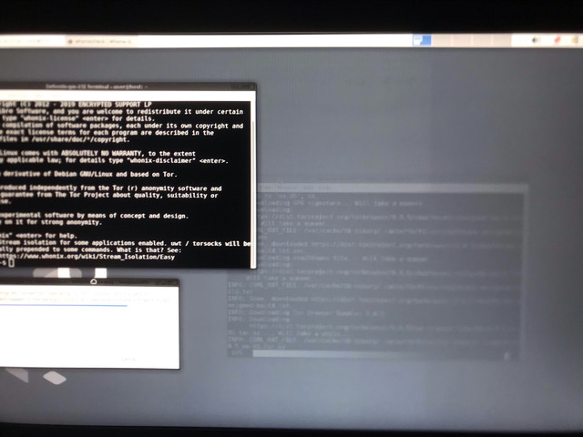

When using PrintScreen, artifacts are not visible in the photograph. So I took a picture on the phone.
 

{kind=link}
Artifacts appear after a new installation of QubesOS. I open the console and whonixcheck in two TemplateVM GW/WS (Whonix). After the launch, artifacts appear. I restart the computer and see these artifacts in the boot menu and when the OS boots. Also, they do not immediately disappear after loading OS. The solution is that I turn off the computer for a while, and after turning on these artifacts disappear. There are no such problems with Whonix AppVM. Only with Whonix TemplateVM. Also, I never came across these artifacts when using the non-whonix AppVM / TemplateVM. When using whonix in kvm, these artifacts also occur, but not as much as in qubesOS. After artifacts appear, if me connect the monitor to another computer, these artifacts will be visible, but after a while they will disappear. I could not trace exactly what these artifacts were connected with, but I think that this is connected with the monitor. Moreover, as I described above, such problems do not occur when using other distributions in TemplateVM / AppVM, as well as in KVM.
Can these artifacts relate to Whonix or look for the cause in my hardware?